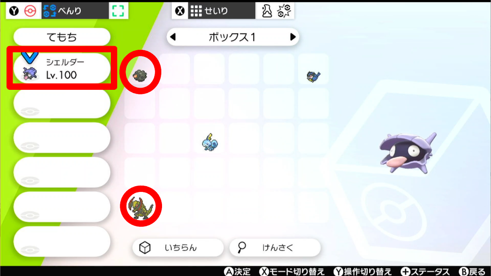

機能ごとの説明（剣盾）
おおまかな流れ
- 序盤（約45分）名前を決めた直後 → 最初のワイルドエリア。イワークにやられてエンジンシティ前に戻り、本体がスリープして終わる。
- 手動の準備（30分くらい）シェルダーを捕まえて育てる。自爆用とダブルバトル用のポケモンも用意する。
- 中盤以降 設定（一度だけ）DLCの有無・背番号・ムゲンダイナのボールを決める。
- 中盤以降（約6時間）エンジンシティの入り口 → 殿堂入り。最後に本体がスリープして終わる。
- クリア後（使いたいときだけ）ザシアン・ザマゼンタ（約1時間）、バドレックス（約3時間）。どちらも捕獲の直前まで。
ゲーム内の設定（話の速さなど）は、序盤の中で自動で変える。
Switch 2 ではまだ試していない（初代Switch向けに作られたもの）。
序盤
ゲームの最初から、最初のワイルドエリアまで自動で進める（約45分）。最後はイワークにやられてエンジンシティ前に戻り、本体がスリープする。
スタート前にやること
- スタート位置
- 言語・見た目・名前を決め終えた直後言語を選ぶ画面からスタートしてもいい。そのときは見た目と名前も自動で決まり、名前は「「」で始まる適当なものになる
- 聞かれる数
- なし
- 終わり
- 最初のワイルドエリアでイワークにやられ、エンジンシティ前に戻って本体がスリープする
ごくまれにメッソンがひんしになって進めなくなる。そのときはやり直すか、手で進める。
手動の準備（序盤と中盤以降の間）
自分のコントローラーでやる。30分くらい。
- シェルダーを捕まえるエンジンシティ前に戻った場所から、正面の湖の釣りポイントで釣りをする（シェルダーは20%）。特性がスキルリンクで、性格が攻撃の下がるものでないかを確認する（性格はあとでミントでもOK）。
- 育成用のデータに送るポケモンHOMEで、育成用の別のセーブデータに送る。経験アメ、銀の王冠、タウリン・インドメタシン（各26個）などが要るので、育成用のデータはクリア済みのものがおすすめ。
- シェルダーを育てるLv100、努力値は攻撃・素早さ252、攻撃に銀の王冠。素早さが下がる性格で個体値15以下なら素早さにも王冠（パルシェンの素早さが201以上になるように）。技はつららばりだけにする。
- 自爆用のポケモンを用意する自爆を覚える低レベルのポケモン（タンドンなど）。技の一番上を「じばく」にする。
- ダブルバトル用のポケモンを用意するLv80以下で、この先レベルアップで技を覚えないポケモン。技の一番上を相手2体を攻撃する技にする（ワイルドエリアのLv60くらいのオノノクス＋ワイドブレイカーがおすすめ）。
- 元のデータに戻すもう一度ポケモンHOMEで、自動で進めるセーブデータに戻す。
- 手持ちとボックスを並べる手持ちはシェルダー1匹だけ。ボックス1の左上に自爆用、左下にダブルバトル用を置く。
中盤以降 設定
中盤以降の前に一度だけやる。DLCの有無・背番号・ムゲンダイナを捕まえるボールを決める。値は保存される。設定しなければ「DLCあり・背番号25・プレミアボール」になる。
- スタート位置
- どこでも（ゲームは動かさない）
- 聞かれる数
-
- DLC：押さない＝あり ／ 1回以上＝なし
- 背番号の100の位
- 背番号の10の位
- 背番号の1の位（②〜④をすべて押さなければ25）
- ボールの番号の10の位（下の表）
- ボールの番号の1の位
例：DLCあり・背番号7・ハイパーボール（12） → ①押さない ②押さない ③押さない ④7回 ⑤1回 ⑥2回
- 終わり
- 入れた値を点滅で知らせる：白（1回＝DLCあり／2回＝なし）→ 黄（背番号）→ 水色（ボールの番号）の順。0は長く1回。
DLCの有無は、ザシアン・ザマゼンタでも使う。
9：マスターボールなどで捕まえたいときは、通信交換などで手に入れ、ボールのリストの2番目（1番目はモンスターボール）に置いてから9を選ぶ。8（スピードボール）は使えない。
中盤以降
エンジンシティの入り口から殿堂入りまで自動で進める（約6時間）。最後に本体がスリープする。
スタート前にやること
- スタート位置
- 手動の準備が終わったデータで、ワイルドエリアからエンジンシティへの入り口をくぐったところ
- 聞かれる数
- なし
- 終わり
- 殿堂入りまで進めて、本体がスリープする
戦闘で技を選ばずに進むので、準備がずれていると止まる。8番道路やウールーを誘導する場面で止まることがある。今は途中から再開できないので、止まったら、どの場面で止まったかメモしておく（直すときに使う）。

中盤以降を始める前の手持ちとボックス1の状態（画像：苔むした日記帳）
ザシアン・ザマゼンタ（クリア後）
クリア後のストーリーを、ザシアン／ザマゼンタを捕まえる直前まで自動で進める（約1時間）。最後に本体がスリープする。捕獲は自分でやる。
スタート前にやること
- 手持ち：パルシェン（Lv100、つららばり、こうげき・すばやさ252、こだわりハチマキ）
- ボックス1の左上：リザードン（Lv100、かえんほうしゃ、とくこう・すばやさ252）
- DLCの有無は「中盤以降 設定」の値を使う
- スタート位置
- ストーリーをクリアした直後、ハロンタウンに「そらをとぶ」で来たところ
- 聞かれる数
-
- 戦い方：押さない＝リザードンと交代しながら戦う（おすすめ） ／ 1回以上＝パルシェンだけ
- 始めるパート番号の10の位
- 始めるパート番号の1の位（②③どちらも押さなければ最初から）
例：最初から、リザードンと交代 → ①押さない ②押さない ③押さない
例：10番のパートから → ①押さない ②1回 ③押さない
- 終わり
- ザシアン／ザマゼンタの捕獲の直前。本体がスリープする
途中から再開するとき
止まったら、そのパートが終わるところまで手で進めて、次のパート番号から始める。
バドレックス（冠の雪原）
冠の雪原のストーリーを、バドレックスを捕まえる直前まで自動で進める（約3時間）。最後に本体がスリープする。捕獲は自分でやる。
スタート前にやること
- DLC（冠の雪原）を買ってあり、DLCのストーリーはまだ進めていない
- 手持ちはパルシェン1匹だけ（Lv100、スキルリンク、こだわりハチマキ、こうげき・すばやさ252、こうげきに王冠、技はつららばりだけ）
- ボックス1を空にする
- おこづかいを27,900円以上にする
- 黒馬でこだわりスカーフを持っている場合：バッグの「どうぐ」でこだわりスカーフだけお気に入りにして、種類順に並べて先頭にする
- 大事なポケモンや道具は別の場所へ移しておく（下の注意）
- スタート位置
- ブラッシータウンに「そらをとぶ」で来たところ（ポケモンセンターから出ただけだと位置がずれて動かない）
- 聞かれる数
-
- 馬：押さない＝白馬（ブリザポス） ／ 1回以上＝黒馬（レイスポス）
- こだわりスカーフ：押さない＝持っていない ／ 1回以上＝持っている（黒馬のときだけ使う）
- 始めるパート番号の10の位
- 始めるパート番号の1の位（③④どちらも押さなければ最初から）
例：黒馬・スカーフあり・最初から → ①1回 ②1回 ③押さない ④押さない
- スタート直後
- 白の点滅で馬を知らせる（1回＝白馬、2回＝黒馬）
- 終わり
- バドレックスの捕獲の直前。本体がスリープする
ダイマックスアドベンチャーで強制レポートがあり、バックアップも上書きされる。大事なポケモンや道具は先に別の場所へ。伝説のポケモン（特にスイクン）を持ち帰ることがある。3回に2回くらいは途中で止まると言われている。Switch 2 には対応していないとされている。
途中から再開するとき
止まったら、そのパートが終わるところまで手で進めて、次のパート番号から始める。